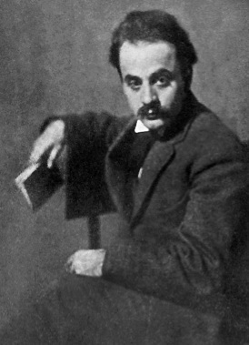
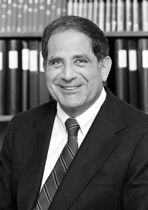
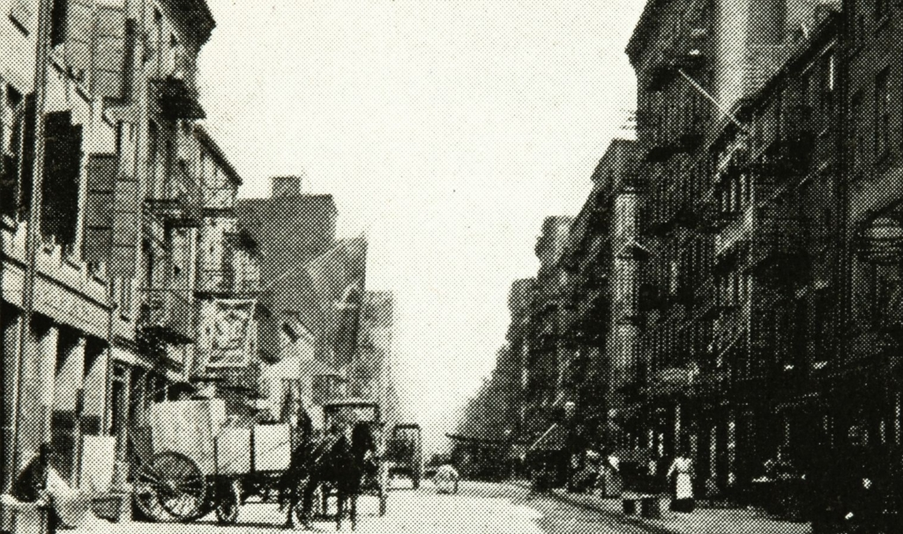

ESSENTIAL QUESTION
How has the Arab American community built a life in the United States while dealing with stereotypes, discrimination, and questions about whether they belong?
In the weeks after September 11, 2001, Adel Kamal walked past a barbershop in Dearborn, Michigan. A sign in the window said: "We don't serve Arabs." Kamal's family had lived in Michigan for generations. That sign told him he did not belong in a place that had always been his home.
After September 11, 2001, Adel Kamal saw a sign in a barbershop window. It said: "We don't serve Arabs." His family had lived in Michigan for generations. The sign told him he did not belong.
Arab Americans have faced that question for more than 140 years. They built churches, opened businesses, raised families, and served in the U.S. military. They organized when they were treated unfairly. They created art, led communities, and ran for office. This lesson tells the story of how they did all of that while also fighting to be seen as fully American.
Arab Americans have faced this question for more than 140 years. They built churches, opened businesses, and raised families here. They organized when they were treated unfairly. This lesson tells the story of how they built a life in America while also fighting to belong.
PHASE ONE
EARLY ARRIVALS
Early Arab immigrants from Greater Syria often worked as traveling merchants before opening their own stores. Library of Congress / Wikimedia Commons.
The first large wave of Arab immigrationMoving from one country to another to live there permanently. began in the 1880s. Most families came from Greater Syria, the region that includes modern Lebanon, Syria, Jordan, and Palestine. Many were Christian. They left because of poverty and pressure under the Ottoman EmpireA large empire centered in Turkey that once ruled much of the Middle East and parts of Europe and North Africa., which controlled the region at the time.
The first large wave of Arab immigration to the United States began in the 1880s. Most people came from Greater Syria. That region includes modern Lebanon, Syria, Jordan, and Palestine. Many were Christian. They left because of poverty and pressure from the Ottoman Empire, which ruled the region.
Many early Arab immigrants worked as traveling merchants, selling fabric and dry goods from door to door. Over time, they saved enough to open stores. They built churches, started Arabic-language newspapers, and formed community groups to help each other find work and housing. Many became U.S. citizens and raised American-born children.
Many early Arab immigrants worked as traveling merchants. They sold goods from town to town. Over time, many opened their own stores. They built churches, started newspapers in Arabic, and helped each other find work and housing. Many became citizens and raised families in America.
A second wave arrived after 1965, when U.S. immigration law changed and welcomed more people from outside Europe. This wave included more Muslims, Palestinians, and families fleeing war and violence. Arab Americans became more diverse in religion, language, and national background. No single label could describe them all.
A second wave arrived after 1965. U.S. immigration law changed and let in more people from outside Europe. This wave included more Muslims, Palestinians, and families escaping war. Arab Americans came from many different places and backgrounds. One label could not describe them all.
At the same time, harmful stereotypesUnfair, oversimplified beliefs about a whole group of people. spread through American movies and television. Arab characters were almost always shown as terrorists, oil sheikhs, or belly dancers. Media scholar Jack Shaheen documented these patterns in more than 900 films. These false images shaped how many Americans thought about Arab people long before September 11.
At the same time, movies and TV showed harmful images of Arab people. Arab characters were almost always shown as terrorists or oil sheikhs. Jack Shaheen studied more than 900 films and found the same patterns again and again. These false images shaped what many Americans believed about Arabs long before September 11.
DID YOU KNOW

Khalil Gibran, Lebanese American poet and artist. Wikimedia Commons.
Khalil Gibran, a Lebanese immigrant who arrived in Boston in 1895, wrote one of the best-selling poetry books in American history. "The Prophet," published in 1923, has never gone out of print and has been translated into more than 100 languages. Most Americans who love this book have no idea its author was Arab American. He lived and worked in the United States for most of his life and died in New York City in 1931.
PHASE TWO
ORGANIZING AND FIGHTING BACK
Arab American community members organizing for civil rights. The Arab American Anti-Discrimination Committee, founded in 1980, challenged unfair treatment in media, schools, and public life. Wikimedia Commons.
Arab Americans did not wait for September 11 to start organizing. In 1980, James Abourezk, a Lebanese American former U.S. senator, founded the Arab American Anti-Discrimination CommitteeAn organization founded in 1980 to defend the civil rights of Arab Americans and fight discrimination in media, schools, and public life.. The group fought unfair treatment in media, schools, and workplaces. It also pushed back on harmful portrayals of Arabs in film and news.
Arab Americans started organizing long before September 11. In 1980, James Abourezk founded the Arab American Anti-Discrimination Committee. Abourezk was a Lebanese American who had served in the U.S. Senate. The group fought unfair treatment in media, schools, and jobs.
After September 11, the pressure on Arab American communities became intense. The government launched a program called Special Registration that required men from Arab and Muslim countries to check in with immigration officials. Thousands were interviewed, detained, or deported. Hate crimes against Arab Americans spiked. Many people were afraid to speak Arabic in public or wear traditional clothing.
After September 11, the pressure on Arab Americans grew fast. The government started a program requiring men from Arab and Muslim countries to register with immigration officials. Thousands were detained or deported. Hate crimes against Arab Americans rose sharply. Many people were afraid to speak Arabic in public.
Arab American organizations responded with lawsuits, protests, voter registration drives, and coalitionA group of different organizations or communities working together toward a shared goal. building with other targeted communities. Lawyers challenged Special Registration in court. Activists held press conferences and spoke in schools. The message was clear: the community would not disappear or stay silent.
Arab American groups fought back with lawsuits, protests, and voter registration drives. They worked with other communities who were being targeted. Lawyers challenged Special Registration in court. Activists spoke in schools and at press conferences. The community refused to stay silent.
Arab American political participation grew steadily after September 11. More Arab Americans ran for office, registered to vote, and built relationships with local governments. In Dearborn, Michigan, Arab Americans have served as mayor and in Congress. Their response to discrimination was to take up more space in public life, not less.
Arab American political power grew after September 11. More people ran for office and registered to vote. In Dearborn, Arab Americans have served as mayor and in Congress. Their answer to discrimination was to show up more in public life, not less.
FAST FACTS
ARAB AMERICA BY THE NUMBERS
3.7MArab Americans live in the United States today, a community larger than the population of many U.S. states
63%of Arab Americans identify as Christian, not Muslim, a fact that challenges one of the most common assumptions about the community
900+Hollywood films documented by Jack Shaheen as using harmful Arab stereotypes, spanning more than a century of American cinema
1880swhen the first major wave of Arab immigration to the United States began, meaning Arab Americans have been part of this country for more than 140 years
PHASE THREE
COMMUNITY TODAY
Arab American communities have established mosques, churches, cultural centers, and businesses across the United States over more than 140 years. Wikimedia Commons / CC.
Arab Americans today come from many different countries and backgrounds. They include Lebanese, Egyptian, Syrian, Iraqi, Palestinian, Yemeni, and other communities. They are Christian and Muslim, recent immigrants and families with deep U.S. roots, working-class and wealthy. The idea that all Arab Americans look or think alike is false.
Arab Americans today come from many different places. They include Lebanese, Egyptian, Syrian, Iraqi, Palestinian, and Yemeni families, among others. They are Christian and Muslim. Some families are new to America. Others have lived here for generations. Arab Americans are not all the same.
IslamophobiaFear, prejudice, or unfair treatment directed at Muslims or at people assumed to be Muslim. affects Arab Americans even when they are not Muslim. Since September 11, Arab and Muslim communities have faced airport profilingTargeting people for extra suspicion or searches based on their race, religion, or national background rather than individual behavior., surveillance of mosques, and unfair treatment in immigration courts. These systems treated millions of people as suspects because of their background, not their actions.
Islamophobia means fear or prejudice against Muslims. It also hits many Arab Americans who are not Muslim. Since September 11, Arab and Muslim communities have faced extra searches at airports, surveillance of their mosques, and unfair treatment in courts. These systems treated people as suspects because of who they are, not what they did.
At the same time, Arab Americans have continued to build power and create community. They run small businesses, lead universities, create music and literature, and shape local elections in cities across the country. In many cities, Arab American voters have become a force that both political parties must pay attention to. The community is not waiting to be accepted. It is shaping the country it has always been part of.
At the same time, Arab Americans keep building power. They run businesses, lead universities, create art and music, and vote in large numbers. In many cities, Arab American voters are a force that politicians cannot ignore. The community is not waiting to be accepted. It is shaping the country it has always been part of.
Real-world connection: In 2024, Arab American voters in Michigan made national headlines by organizing a protest vote in the Democratic primary over U.S. policy in Gaza. Their organizing showed how a community can shape national politics even when it feels ignored.
In 2024, Arab American voters in Michigan organized a protest vote in the Democratic primary over U.S. policy in Gaza. Their organizing showed that a community can push back on national politics and be heard.
ART SPOTLIGHT
Untitled — Etel Adnan, 1965
This leporello by Lebanese American artist Etel Adnan combines watercolor marks, abstract symbols, and poem text in an accordion-fold book that unfolds like a landscape.
Adnan was born in Beirut and grew up writing in French because Arabic had been banned from her school by the French colonial government. She later switched to English and Arabic, and eventually stopped writing words altogether in some works, letting paint and line carry the meaning instead. She said the leporello form let her writing move the way memory moves: not in a straight line, but folding back on itself.
PRIMARY SOURCE MOMENT

Jack G. Shaheen documented Arab stereotypes across more than 1,000 Hollywood films. Wikimedia Commons / public source.
"For years, I have looked at how image makers have projected Arabs on silver screens. In Reel Bad Arabs, I looked at more than 1,000 films, from the earliest days of Hollywood to today's biggest blockbusters. Given what happened with 9/11... instead of saying that's the lunatic fringe, we say the actions reflect 1.3 billion people. Now, that's dangerous."
Jack G. Shaheen, interview about Reel Bad Arabs: How Hollywood Vilifies a People, 2007
WHY THIS MATTERS: Shaheen is saying that when movies repeat the same harmful image over and over, people start to believe it is true. After September 11, those images helped people blame 1.3 billion Muslims for what a small group of people did. Shaheen spent his career proving that images have power, and that fighting false stories is part of fighting discrimination.
THEN AND NOW
ARAB AMERICANS HAVE BUILT COMMUNITY FOR MORE THAN 140 YEARS. BELONGING SHOULD NOT HAVE TO BE PROVEN AGAIN AND AGAIN.
1900S

The Syrian Quarter near Washington Street in Lower Manhattan, circa 1900-1920. An early center of Arab American community life. Library of Congress.
NOW
Arab Americans at a community event in Dearborn, Michigan. Arab American voters and community leaders are shaping local and national politics. CC license.
THEN
Early Arab immigrants built neighborhoods around churches, newspapers, family stores, and community groups. The Syrian Quarter in New York shows what Arab American city life looked like more than a century ago. They were not just traveling merchants. They built permanent communities and raised American children.
NOW
Today Arab Americans serve in Congress, run cities, lead businesses, teach in universities, and create art that shapes American culture. In cities like Dearborn, Arab American voters have become a political force. Yet stereotypes, hate crimes, and surveillance show that belonging is still contested and still has to be defended.
CONNECTION
The same question runs through all of it: who gets to be seen as fully American? Arab Americans have answered that question through work, art, organizing, and leadership for more than 140 years. Their history shows that American identity is built by communities that keep showing up, even when others question whether they belong.
What images of Arab Americans do you carry, and where did they come from?